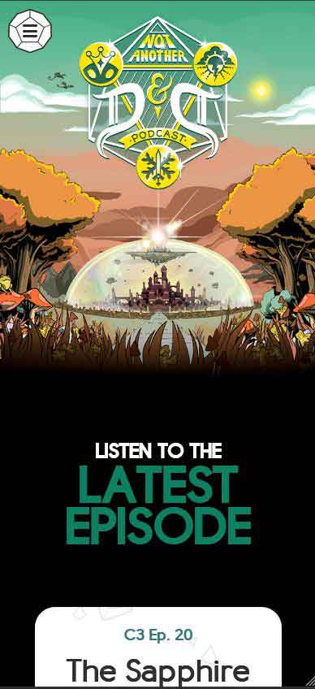
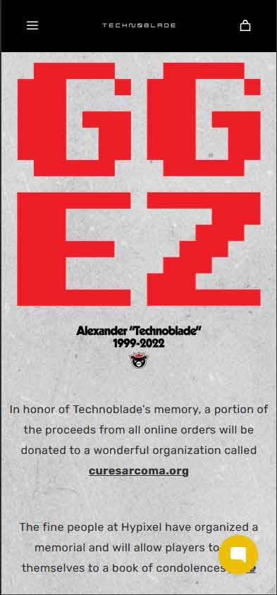

Fitt's Law
YouTooz
Youtooz does a wonderful job with Fitt’s Law. The products they are selling are all almost going be limited time, and advertised by the creators themselves. When you are going to the Youtooz home page you probably want to go to the biggest creator immediately. So the products that are shown right away are the creators with the biggest followings. If you are interested in browsing, they include a search bar and a “see all” button right above those. It will be impossible to not find what you want quickly.
Visual Hierarchy
Not Another Dungeons and Dragons Podcast
The first thing you see on the Not Another Dungeons and Dragons Podcast page is their Logo. It is so well designed and draws your attention right to it. It is also shaped to move they eye down the page where you will find a image directly relating to their latest campaign, followed by a dark space that guides you to the latest episode. It moves the eye across the page towards what the viewers are going to be most interested in, as well as making it fun and exciting to come to the page. There is even an animation that can’t be shown in the capture.
White Space and Clean Design
TechnoBlade
The TechnoBlade page is doing something really interesting right now. It is using white space and clean design to both memorialize the well known youtuber. He passed away earlier this year and the website is showing the final logo design that is on the clothing. It leaves a lot of white space as well as provides a clear message of respect and a clean look. The website uses this backdrop to leave a respectful message about charity in honor of the youtuber, all of which is contrasted with the white space.